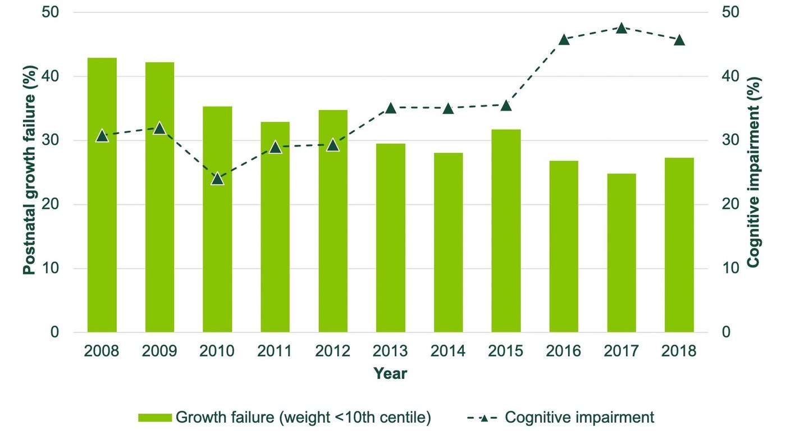

The importance of monitoring length and head growth

A new study proposes a game-changing approach to improving cognitive outcomes in extremely preterm infants. Researchers have found that tracking growth in length and head circumference, rather than focusing solely on weight, has the potential to reduce the risk of cognitive impairment in these vulnerable babies.
The study published in The Journal of Pediatrics, which analyzed data from over 5,000 infants born between 24 and 26 weeks of gestation in US neonatal units, challenges the long-held practice of using weight-based growth metrics to predict cognitive outcomes. Instead, the research shows that a decline in head circumference and poor length growth are much stronger indicators of cognitive risk at two years of age.
Infants with a length z-score below -1 at 36 weeks postmenstrual age, along with a weight z-score decline of 2 or more from birth to 36 weeks, were identified as being at the highest risk for cognitive impairment.
These findings open the door to new opportunities for earlier, more targeted interventions in neonatal care. By shifting focus to head and length gains, medical teams could strategically tailor nutritional plans and therapies, potentially transforming long-term outcomes for extremely preterm infants.